アプリ
iPhone・iPad・Mac・Apple Watch のアプリ
-
KATACHI筋トレ・体重・体型写真をひとつに記録
- 使う場面
- 体づくり
- 使える端末
- iPhone
- 記録の置き場所
- この端末の中
-
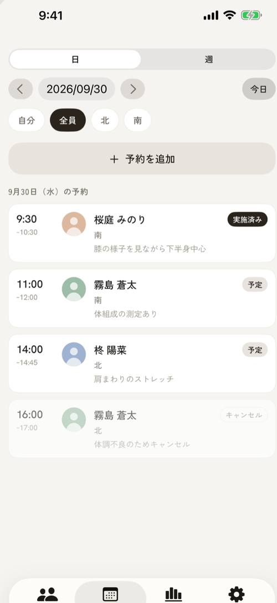
KATACHI +パーソナルトレーナーの顧客カルテを、店舗で共有- 使う場面
- トレーナーの顧客管理
- 使える端末
- iPhone・iPad・Mac
- 記録の置き場所
- 端末と自分の iCloud
-
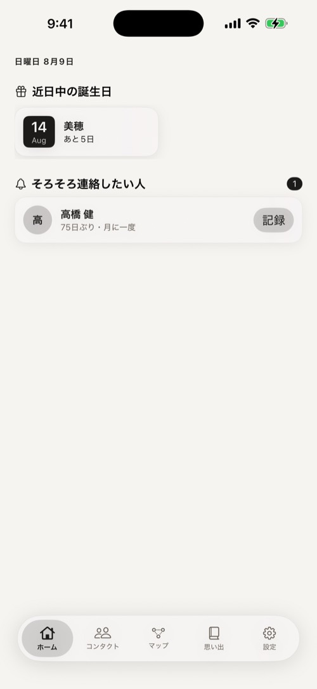
Keep In Touch大切な人への連絡を、忘れないうちに- 使う場面
- 人とのつながり
- 使える端末
- iPhone
- 記録の置き場所
- この端末の中
-
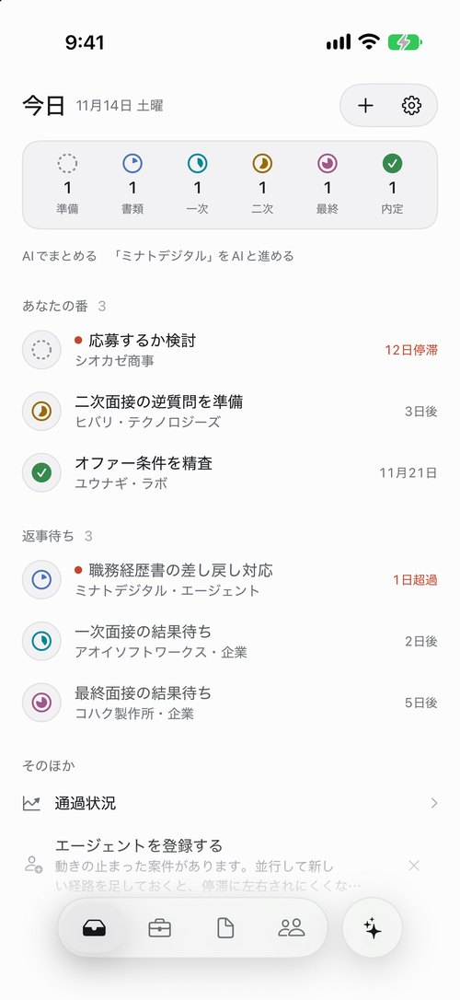
Glidwell転職活動の選考を、ひと目で管理- 使う場面
- 転職活動
- 使える端末
- iPhone
- 記録の置き場所
- この端末の中
-
Graphあらゆる数字を2タップで記録・グラフ化
- 使う場面
- 数字の記録
- 使える端末
- iPhone
- 記録の置き場所
- この端末の中
-
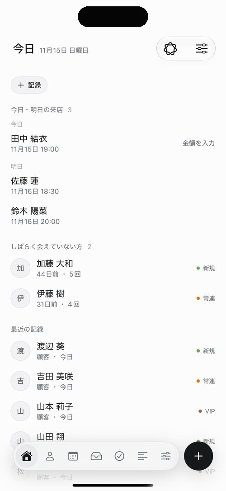
One CRM顧客・商談・案件を、スマホひとつで- 使う場面
- 顧客・案件の管理
- 使える端末
- iPhone・iPad・Mac
- 記録の置き場所
- 端末と自分の iCloud
-
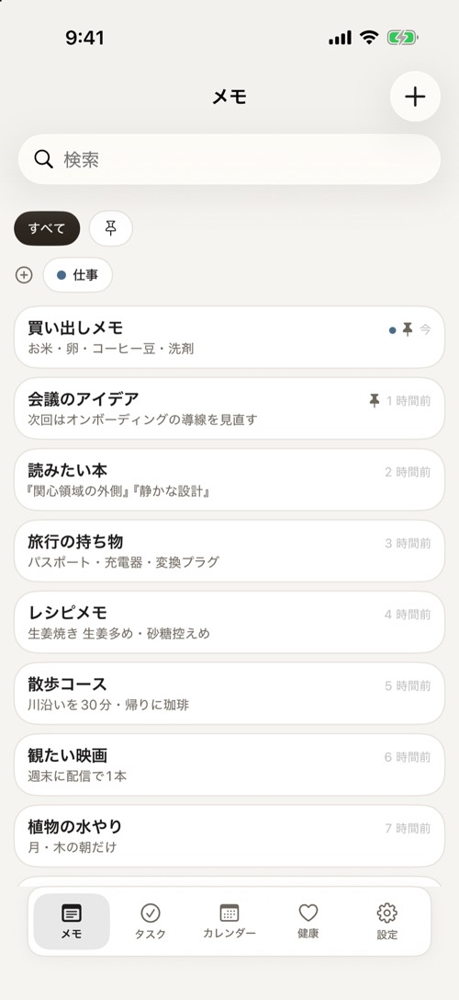
Utilityメモ・ToDo・カレンダー・体重をひとつに- 使う場面
- 毎日のメモと予定
- 使える端末
- iPhone・iPad・Mac
- 記録の置き場所
- 端末と自分の iCloud
-
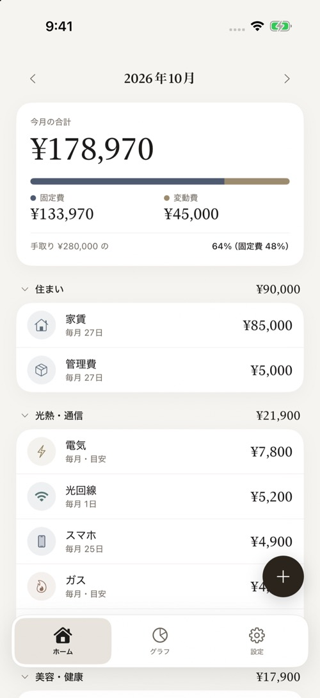
Costs毎月の固定費を、ひと目でゆるく把握- 使う場面
- 固定費の把握
- 使える端末
- iPhone
- 記録の置き場所
- この端末の中
-
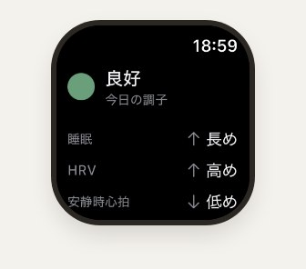
- 使う場面
- 毎朝の体調の目安
- 使える端末
- Apple Watch
- 記録の置き場所
- Apple Watch の中
-
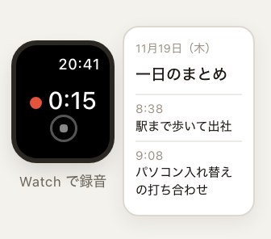
- 使う場面
- 会話・一日の記録
- 使える端末
- iPhone・Apple Watch
- 記録の置き場所
- iPhone と Apple Watch の中
-
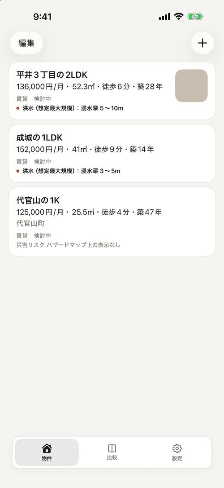
YANE物件の災害リスクと相場を、住所から比較- 使う場面
- 住まい選び
- 使える端末
- iPhone
- 記録の置き場所
- この端末の中
-
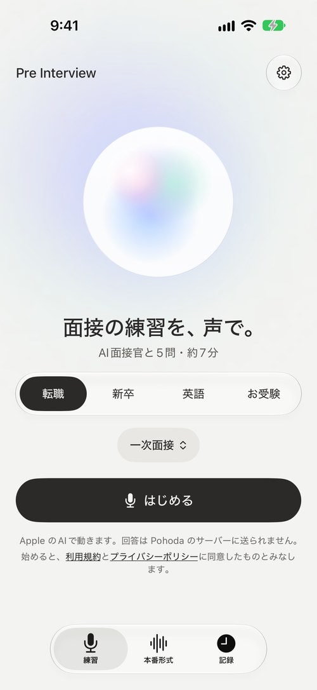
Pre InterviewAIの面接官と、声で模擬面接- 使う場面
- 面接の練習
- 使える端末
- iPhone
- 記録の置き場所
- 講評はこの端末の中
- Pre Interview を法人・エージェントで使う求職者に配れる10セット分のコード
Web サービス
ブラウザで使えます
-
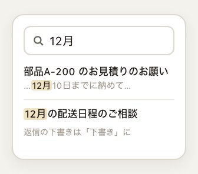
- 使う場面
- メールの検索・返信
- 使える端末
- PC の Thunderbird 128 以降
- 記録の置き場所
- 索引はこの PC の中
- メールを社外に出さずに AI を使う社内サーバー（20万円〜）・パソコン（15万円で5台）で AI が動く形も
-
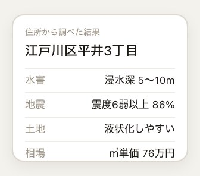
- 使う場面
- 住まい選び
- 使える端末
- ブラウザ・iPhone
- 記録の置き場所
- 物件はブラウザの中
- YANE を不動産会社で使う会社名とロゴ入りの物件説明レポート・5人まで
-
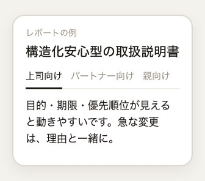
- 使う場面
- 自己理解
- 使える端末
- ブラウザ
- 記録の置き場所
- 回答はブラウザの中
-
- 使う場面
- 週末のドライブ
- 使える端末
- ブラウザ
- 記録の置き場所
- 保存はブラウザの中
法人向けサービス
会社・事業者の方へ
- iPhone アプリ開発企画から App Store 公開まで約1か月・50万円から
- AI Mail AutoThunderbird のメール検索と返信の下書き・1人 月 ¥1,000
- AI Mail Auto 社内サーバー社内の Mac で AI が動き、メールを社外に出さない・20万円〜
- AI Mail Auto for PC社員のパソコンで AI が動き、メールを社外に出さない・15万円で5台
- YANE for Business不動産会社向けの物件レポート・月 ¥4,980（5人まで）
- Pre Interview求職者に配れる AI 模擬面接・10セット ¥12,000
- 法人向けサービスをまとめて見る料金・お試し・請求書払いについて →
複数の転職エージェントの選考管理に、私はこうして詰んだ
フェーズ・ボールの所在・次の一手を一画面で。複数エージェント併用の選考管理アプリを作るまで。
筋トレの記録が続かなかった私が、「写真」で続いた話
続かないのは意志ではなく仕組みの問題。入力の摩擦を減らし、写真を中心に据えたら習慣に変わった。
自己分析はなぜ続かないのか
続かない理由を分解して、記録の摩擦を減らす設計に落とすまで。これも意志ではなく仕組みの話。
筋トレ記録アプリの選び方と比較
誕生日管理アプリの選び方と比較
数字を記録してグラフにするアプリの選び方と比較
体重記録アプリの選び方と比較
サブスク管理アプリの選び方と比較
就活・転職の管理アプリの選び方と比較
面接練習アプリの選び方と比較
顧客管理アプリの選び方と比較
パーソナルトレーナーの顧客管理アプリの選び方と比較
Apple Watch で録音するアプリの選び方と比較
Apple Watch で体調を見るアプリの選び方と比較
ハザードマップアプリの選び方と比較
自己分析ツールの選び方と比較
Pohodaについて
個人事業主（屋号：Pohoda）／提供者：杉本 啓輔／開業：2026年5月（東京都）
「Pohoda（ポホダ）」は、チェコ語で “心地よい安らぎ” を表す言葉です。
自社で企画・開発した iOS アプリと Web サービスを、アプリ内課金（サブスクリプション・買い切り）と Web の有料プランで提供しています。About Pohoda (English)
iPhone アプリの受託開発もお受けしています。着手から約1か月で App Store 公開まで、50万円から（アプリ開発のご相談）。法人・事業者向けのサービスは法人向けサービスにまとめています。
事業内容・連絡先・各種表記は運営者情報にまとめています。
アプリのお問い合わせ：pohoda.inc@gmail.com
事業・取引のご連絡：info@pohoda.jp
Pohoda（ポホダ）とは何ですか？
体づくり・数字の記録・人とのつながり・転職活動・面接練習・住まい選び・顧客管理・固定費・一日の記録・メール・自己理解までを支える iOS アプリと Web サービスをつくる個人事業です（屋号：Pohoda／提供者：杉本 啓輔）。
どんなアプリ・サービスがありますか？
App Store で公開中の iPhone・Apple Watch のアプリは12本あります。体づくり記録の KATACHI、パーソナルトレーナー向け顧客カルテの KATACHI +、数字記録の Graph、誕生日と人間関係の Keep In Touch、転職選考管理の Glidwell、顧客・案件管理の One CRM、メモ・ToDo・体重をまとめた Utility、固定費の家計簿の Costs、Apple Watch で今日の調子の目安を見る Dayglyph、一日の会話を録って夜に報告にまとめる DayDay、物件比較とハザードマップの YANE、AI面接練習の Pre Interview です。Web・PC 向けは、Thunderbird のメール検索と返信の下書きをする AI Mail Auto、YANE の Web 版（不動産会社向けの YANE for Business を含む）、自己理解の Insight、絶景ドライブの DriveScape があります。
データは収集されますか？
アプリの記録は原則あなたの端末の中に保存され、必要のないデータは集めません。行動を追跡する仕組みは入れていません。AI を使う機能（Pre Interview の面接練習など）は、処理のために内容を AI の事業者へ送信します。送信する情報と保存の期間は、各アプリのプライバシーポリシーで説明しています。一部の無料 Web サービスは広告・送客で運営します。
「Pohoda」の意味は？
チェコ語で「心地よい安らぎ」を表す言葉です。長く使える道具づくりを、屋号にしました。